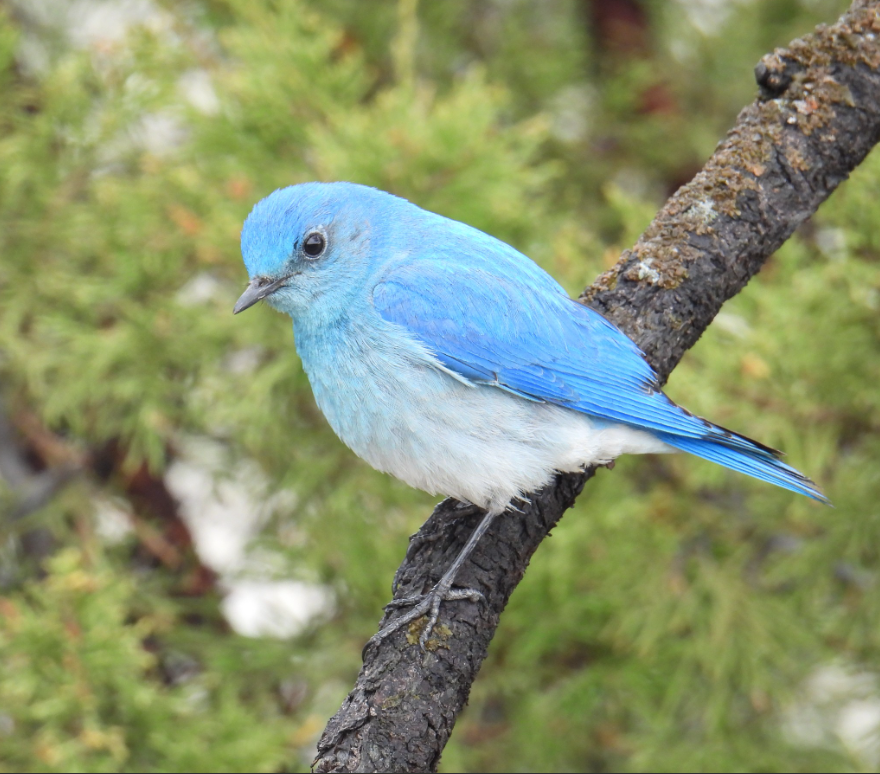

Montagem na pratica semaforo duplo

montagem na pratica semaforo duplo
print de tela da c++ semaforo duplo

print de tela da c++ semaforo duplo
// C++ code
//
void setup()
{
pinMode(13, OUTPUT);
pinMode(7, OUTPUT);
pinMode(12, OUTPUT);
pinMode(10, OUTPUT);
pinMode(11, OUTPUT);
}
void loop()
{
digitalWrite(13, HIGH);
digitalWrite(7, HIGH);
delay(7000); // Wait for 7000 millisecond(s)
digitalWrite(12, HIGH);
digitalWrite(13, LOW);
delay(2000); // Wait for 2000 millisecond(s)
digitalWrite(7, LOW);
digitalWrite(12, LOW);
digitalWrite(10, HIGH);
digitalWrite(11, HIGH);
delay(7000); // Wait for 7000 millisecond(s)
digitalWrite(11, LOW);
digitalWrite(12, HIGH);
delay(2000); // Wait for 2000 millisecond(s)
digitalWrite(12, LOW);
digitalWrite(10, LOW);
delay(1); // Wait for 1 millisecond(s)
}